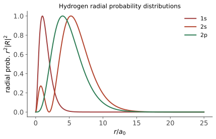

本页目录
量子 III · 角动量、氢原子与自旋
对标：Griffiths §4 ｜ 前置：qm-01/02、mech-03（泊松括号）、mp-01（球谐/Laguerre，可后补） 三维量子力学的主线：角动量代数（又是纯代数摘谱）→ 氢原子精确解（三个量子数的出生）→ 自旋（没有经典对应的内禀角动量）→ 全同粒子（sm-03 欠条的兑付）。终点站是元素周期表——量子力学最宏伟的解释性胜利。
学习层：先猜量子数与谱线，再打开氢原子账本
1. 具体谜题：同一个 \(n\)，到底有多少种状态？
先把两个层次分开：一般角动量表示 \(J\) 的升降代数允许 \(j=0,\tfrac12,1,\tfrac32,\ldots\)；但轨道角动量 \(L=r\times p\) 的坐标波函数必须在方位角绕一周后单值，因此轨道谱只取整数 \(\ell=0,1,2,\ldots\)。自旋 \(S\) 才承接半整数表示，原子总角动量 \(J=L+S\) 再按角动量耦合规则组合。以下非相对论、无外场的单电子 Coulomb 模型用轨道态 \((n,\ell,m)\) 记账。先固定一个候选态，例如 \(3d,m=2\)，再问：
- \(\ell\) 是否可以等于 \(n\)？给定 \(\ell\) 后，\(m\) 有多少个允许值？
- \(E_n\) 是否会因 \(\ell\) 或 \(m\) 改变？\(n=3\) 壳层的轨道简并是 \(9\) 还是 \(18\)（先区分是否计入自旋）？
- 电偶极跃迁 \(3d,m=2\to2p,m=1\) 是否允许？\(3d,m=2\to2p,m=0\) 呢？
2. 允许范围、简并与精确能级
轨道角动量的允许集合是
所以固定 \(\ell\) 有 \(2\ell+1\) 个取向，固定 \(n\) 的轨道态数为 \(\sum_{\ell=0}^{n-1}(2\ell+1)=n^2\)；若把电子自旋二重态也计入，壳层数为 \(2n^2\)。在忽略精细结构、Lamb shift、超精细结构、外场和其他谱线修正的理想非相对论 Coulomb 模型中，氢原子的精确能级为
因此同一 \(n\) 的不同 \(\ell,m\) 在本模型中简并。径向函数在原子单位制中由 Laguerre 多项式给出，径向概率是 \(P_{n\ell}(r)=r^2|R_{n\ell}(r)|^2\)，其节点数为 \(n-\ell-1\)。
3. 选择定则与谱线：只把允许性写成规则
电偶极（E1）跃迁的轨道选择定则是
并且自旋在这个近似中不变。规则满足只表示矩阵元可能非零，还要有上下能级顺序和非零径向积分才构成具体谱线；\(\Delta\ell=0\) 或 \(|\Delta m|>1\) 的例子在 E1 模型中禁戒。
4. 动手实验：先预测，再揭示能级、径向和跃迁账本
选择 \(n,\ell,m\) 和一条候选跃迁。揭示前不显示能级位置、径向曲线、节点计数和“允许/禁戒”结论；揭示后把三种账分开：量子数合法性、Coulomb 能量/简并、以及 E1 选择定则。径向图以 \(a_0\) 为横轴，并显示 \(0\le r\le8n^2a_0\) 上的数值归一化积分；精确归一化仍是无穷区间上的 \(\int_0^\infty r^2|R_{n\ell}(r)|^2dr=1\)。能级图以 eV 为纵轴。
无 JavaScript 时的静态读法：以下数值使用无限重质子近似的原子单位径向函数；能量保留常用的 \(13.6\ \mathrm{eV}\) 近似。
| 态 | 允许的 \((n,\ell,m)\) 信息 | \(E_n\) (eV) | 径向节点 | 同壳层轨道简并 |
|---|---|---|---|---|
| \(1s\) | \((1,0,0)\) | \(-13.6000\) | \(0\) | \(1\) |
| \(2s\) | \((2,0,0)\) | \(-3.4000\) | \(1\) | \(4\) |
| \(2p\) | \((2,1,-1/0/1)\) | \(-3.4000\) | \(0\) | \(4\) |
| \(3d\) | \((3,2,-2,-1,0,1,2)\) | \(-1.5111\) | \(0\) | \(9\) |
| 候选跃迁 | \(\Delta\ell\) | \(\Delta m\) | E1 结论 | 光子能量 \(|\Delta E|\) | |---|---:|---:|---|---:| | \(2p,m=0\to1s,m=0\) | \(-1\) | \(0\) | 允许 | \(10.2000\) eV | | \(2s,m=0\to1s,m=0\) | \(0\) | \(0\) | 禁戒 | 无 E1 谱线 | | \(3d,m=2\to2p,m=1\) | \(-1\) | \(-1\) | 允许 | \(1.8889\) eV | | \(3d,m=2\to2p,m=0\) | \(-1\) | \(-2\) | 禁戒 | 无 E1 谱线 |
\(n=3\) 的 \(1+3+5=9\) 是轨道简并；乘上自旋二席才得到 \(18\)。这张表和径向曲线都属于单电子、球对称 Coulomb 参考模型，不是多电子原子排布的精细谱表。
5. 模型边界：简并会在哪里被拆开？
- 这里的 \(E_n\) 是非相对论 Coulomb Hamiltonian 的精确解（通常取无限重质子或吸收到约化质量修正中）；\(n^2\) 与 \(2n^2\) 简并只在没有相对论动能、自旋–轨道耦合、Darwin 项、Lamb shift、超精细结构、外场和有限核质量等修正时成立。
- 外加磁场/电场会通过 Zeeman/Stark 项拆分或混合简并；此时 \(m\)、甚至 \(\ell\) 的好量子数地位要按新 Hamiltonian 重新判断。
- E1 选择定则是偶极近似与球对称基底下的矩阵元规则；磁偶极、电四极、多电子组态混合和强场过程会提供不同的弱允许通道。
- 径向分布是概率密度 \(r^2|R|^2\)，不是经典轨道半径的时间轨迹；节点数与能量简并是不同的账本。
1. 角动量代数（升降算符第二战）
\(\hat{\mathbf L} = \hat{\mathbf r}\times\hat{\mathbf p}\)，对易关系（mech-03 例 2 的泊松括号按字典翻译）：
【推导（纯代数）】 取共同本征组 \(\{\hat L^2, \hat L_z\}\)；定义 \(\hat L_\pm = \hat L_x \pm i\hat L_y\)：\([\hat L_z, \hat L_\pm] = \pm\hbar\hat L_\pm\)——升降 \(m\) 一格而不动 \(\hat L^2\)；\(\|\hat L_\pm|\ell m\rangle\|^2 \geq 0\) 给阶梯上下有界，端点条件解出：
一般 \(J\) 的表示代数确实允许半整数 \(j\)；但 \(L=r\times p\) 还受坐标波函数单值性约束，球谐函数 \(Y_\ell^m\) 只给整数轨道谱。半整数席位属于自旋及其与 \(L\) 耦合后的总角动量，而不是把半整数 \(\ell\) 填进氢原子的轨道表。
2. 氢原子（教科书物理的珠穆朗玛）

中心势分离变量（球坐标）：角向 = 球谐函数（§1 的谱）；径向方程带有效势 \(\frac{\hbar^2\ell(\ell+1)}{2mr^2} - \frac{e^2}{4\pi\varepsilon_0 r}\)（mech-01 有效势的量子版）。
【推导骨架】 无量纲化 → 渐近剥离（\(r\to\infty\) 指数衰减、\(r\to0\) 幂次）→ 中段级数解 → 级数必须截断（否则破坏归一化——量子化再次由边界条件执行）⇒
（径向函数 = Laguerre 多项式。）Rydberg 公式 \(\frac{1}{\lambda} = R\big(\frac{1}{n_1^2} - \frac{1}{n_2^2}\big)\)——氢光谱三十年的经验密码一朝破译（Balmer 线系全部对号）；能级只依赖 \(n\) 的"意外简并"（\(\ell\) 不进能量）是 \(\frac1r\) 势的特权（Runge–Lenz 守恒量的量子回响——mech-01 彩蛋闭环）。
三个量子数的物理：\(n\)（能量/壳层）、\(\ell\)（轨道形状：s 球、p 哑铃……）、\(m\)（取向——磁场中简并解除：Zeeman 效应）。
3. 自旋：第四个量子数
实验判决（Stern–Gerlach：银原子束在非均匀磁场中劈成分立两束）主要读出银原子未配对价电子的磁矩/自旋贡献，而不是对一个脱离原子、没有轨道与原子环境的自由电子自旋作无条件直接测量。价电子携带内禀角动量 \(s = \frac12\)——正是一般 \(J\) 代数预留的半整数席位。\(s = \frac12\) 的表示空间二维：
（Pauli 矩阵——验证对易关系一行。）自旋没有经典图像（不是"自转"：点粒子无轴可转；转 \(360°\) 变号、\(720°\) 才还原——旋量的怪异）。二能级系统 = qubit：自旋 \(\frac12\) 的数学（二维 Hilbert 空间 + Pauli 代数）就是量子信息的全部字母表（qi-01 整门课的地基在此浇筑）。
4. 全同粒子与周期表（收官）
全同粒子交换对称性只许两种（交换算符 \(\hat P^2 = 1\) ⇒ 本征值 \(\pm1\)）：对称（玻色子）/反对称（费米子）——自旋-统计定理【引用，qft 层面的定理】把整/半整自旋与之绑定（sm-03 §1 的欠条兑付）。反对称 ⇒ Pauli 不相容（两费米子同态则波函数自零）。
周期表的三行解释：每个 \((n, \ell, m)\) 轨道 × 自旋二席；电子逐层填充（能量序 + 排他）⇒ 壳层结构 2, 8, 8, 18…；化学性质 = 最外层电子的填充状态——元素周期律从量子数的计数中长出：量子力学 ⇒ 化学 的还原论桥梁（近似意义下——多电子相互作用的修正是量子化学的全部生计）。
5. 练习与要点
例 1（Stern–Gerlach 串联） 先测 \(S_z\) 取 \(+\) 束，再测 \(S_x\)：各半概率（\(|+_z\rangle = \frac{1}{\sqrt2}(|+_x\rangle + |-_x\rangle)\)）；再测 \(S_z\)——又是各半（测 \(S_x\) 抹掉了 \(S_z\) 信息：非对易观测量的塌缩接力，qm-01 公理的实验剧场，qi-01 的开场白）。
例 2（自旋进动） 磁场中 \(\hat H = -\gamma B\hat S_z\)：Heisenberg 方程给 \(\langle\mathbf S\rangle\) 绕 \(B\) 以 Larmor 频率 \(\omega = \gamma B\) 进动——NMR/MRI 的物理全部在这一行（射频脉冲翻转 + 进动信号读出）。
例 3（简并计数） 在忽略精细结构、Lamb shift、超精细结构与外场的单电子 Coulomb 模型中，\(n = 3\) 壳层：\(\ell = 0,1,2\) 给 \(1 + 3 + 5 = 9\) 轨道 × 2 自旋 = 18 席——这是模型内的计数，不是现实谱线在所有修正下仍保持的简并；一般为 \(n^2\) 个轨道、计自旋为 \(2n^2\)。\(\blacksquare\)
下一页：真实世界没有精确解——微扰论与变分法：量子力学的工程学，以及氢原子精细结构的层层修正。